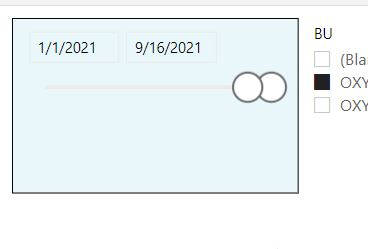
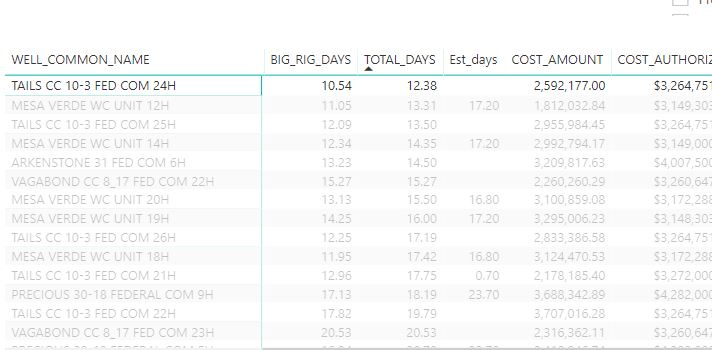
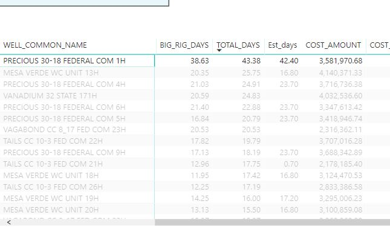
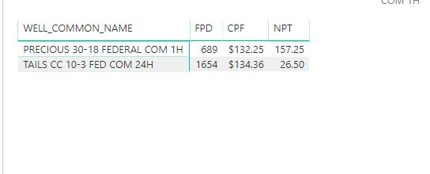

For this project, we'll include video walkthrough's for each question in order to capture the interactivity of Power BI.
What I'm trying to showcase here is not the ability to track down data but instead, the ability to create the Power BI dashboard to where it makes finding these answers a remedial task.
Q1: How many days did it take to drill our best and worst performing Wells in 2021?
Adjust the date range to only show 2021 data.

Sort the total time column in the table in ascending order for fastest and descending order for slowest.


Fastest Well Duration: 12.38 days
Slowest Well Duration: 43.38 days
Video walkthrough for Q1:
Q2: What were the differences in total NPT (Non productive time) for these two Wells?
Using Ctrl, select both Wells from the same table, now scroll down to the table that shows NPT data.

Fastest Well NPT: 26.5 Hrs
Slowest Well NPT: 157.25 Hrs
Video walkthrough for Q2:
Q3: How much time was spent tripping for these two wells?
Now it's time to utilize one of my favorite features of Power BI, the ability to "Drill-through" which allows you to go from a general page to a more detailed page.
For Each Well, you'll need to right-click and select the "Drill-through" option and select "Well-Detailed" which is a page I created to show Well Specific Details.